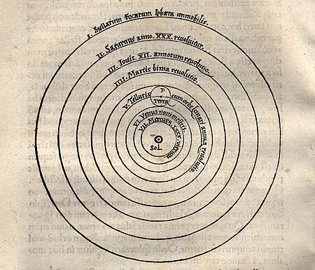
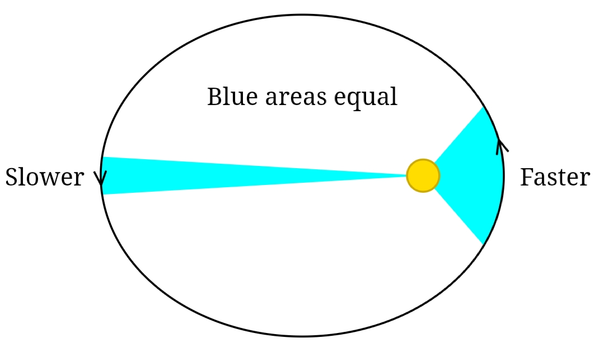

Cosmology is the study of Universe, and the Universe is always an interesting place to look at, in this page we will look at the history of cosmology.
Ptolemy
Ptolemy is the first astronomer to publish a model of the Universe that is able to predict the motion of celestial body, his main idea is:
- The Earth is in the center of the Universe
- The Sun, Moon and planets goes around the Earth
- All celestial body follows a circular orbit
- Epicycles are introduced to explain retrograde

An image depicting the geocentric model, The center is the Earth, surrounded by planets and Sun, the outer most shell is where the star is located
Nicolaus Copernicus
This first "kinda" accurate Universe model is proposed by Nicolaus Copernicus, he propose that:
- The Sun is in the center of the Universe
- The Earth goes around the Sun and the Moon goes around the Earth
- The Universe has a finite size
- The Universe is very very big, much bigger than the distance between the Earth and the Sun
The rest of his theory is similar to Ptolemy's Geocentric model, such as epicycles, circular orbit.
Although there are many flaws in his model (epicycles and circular orbit are later replaced by elliptical orbit, and the Sun is not in the center of the Universe), but this model is indeed the most accurate at the time.

This image depicts the heliocentric model, the only main difference is the Sun is now in the center
Giodarno Bruno
He modify the model proposed by Copernicus and created his own version of the Universe. He proposed that:
- The Sun is not in the center of the Universe, there is nothing special about our location in the Universe
- The Universe is infinite, filled with a matter called aether
- There are many other worlds in the Universe
This is another step towards a more accurate undrestanding the Universe, however at his time, this idea was consider outragoues by the Church, he was burnt alive as the punishment of those claims.
Johannes Kepler
Kepler revolutionized astronomy, his Kepler's Three law are still widely used from high school classroom to research papers. His laws also revolutionized our idea on how the Universe works, his laws are:
- All planets orbit the Sun in an elliptical orbit, with the Sun at the focus of the ellipse
- At any two equal time interval, the area swept by the line between Sun and the orbiting planet is the same
- The cube of semi-major axis of the planet's orbit is propotional to the square of the period of the planet
With his laws, he replace the circular orbit in Copernicus model with elliptical orbits, which erase the complex epicycle theory. Currently, Newtonian mechanics suggests that the orbit of a celestial body around another body is a conic section.

Issac Newton
By the time of Newton, human has already gather enough information about everything that finally, we can try to understand what is going on now. Newton propose that:
- The Universe is well discribed by Euclidean geometry (geometry taught in school)
- THe Universe is static (unchanging)
- Time is absolute, nothing can affect time, every observer experience time as others
- Object will remain in rest or uniform motion unless a force act upon it
- The Universe is infinitely old
With the universal gravitation law Newton derived, he was able to explain how everything in the Universe works, and it seems that he had just proposed the theory of everything.
Albert Einstein
When Albert Einstein proposed his theory of relativity, he revolutionized cosmology again, he proposed that:
- Space and time are intertwined, they are one thing called spacetime
- Mass (or energy) bends spacetime, gravity is an illusion, objects are simply moving in the geodesic (fancy word for shortest distance) of spacetime
- Speed of light is a constant for everyone in the Universe, regardless if they are moving or not
- Time can be different for different observers moving in different velocity
Einstein's general relativity paved to way for Alexander Friedmann to publish his equation about the Universe, which is the foundation of modern cosmology. However from general relativity, one can derive an unstable (expanding/contracting) Universe, and this is not acceptable by the majority of scientist (leftover from the Newtonian era),
which made Einstein believe that there is something in the Universe that behave like anti-gravity, balancing the Universe, he called it the cosmological constant (cosmological holds significant meaning in studying dark energy, but Einstein did not forseen this).
Alexander Friedmann & Edwin Hubble
In 1924, he published a paper, studying the evolution of a Universe with a positive, flat and negative curvature, he was one of the first person to propose the idea that the Universe is expanding/contracting
In 1929, Edwin Hubble discover that the Universe is expanding, which prove that Friedmann was indeed right and cosmological constant is wrong (temporarily).
With that, we have basically see the history of cosmology, from the ancient Greeks to the Russian (Friedmann) who published his equation to describe the Universe, maybe in the future, you will be written into the history of cosmology.